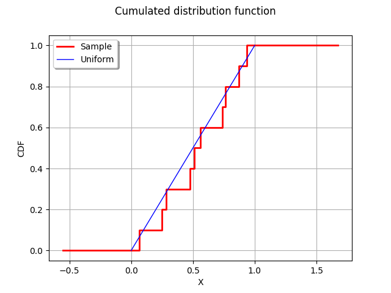
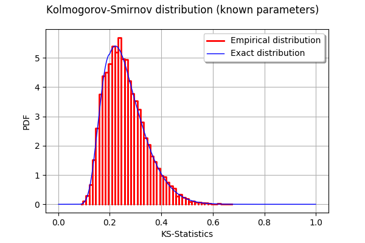
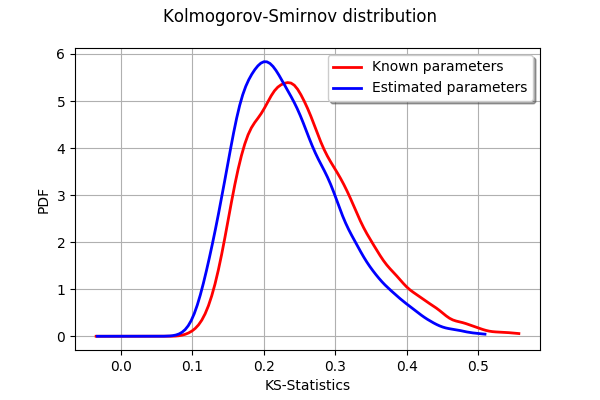

The Kolmogorov-Smirnov distribution¶
In this example, we draw the Kolmogorov-Smirnov distribution for a sample size 10. We want to test the hypothesis that this sample has the Uniform(0,1) distribution. The K.S. distribution is first plot in the case where the parameters of the Uniform distribution are known. Then we plot the distribution when the parameters of the Uniform distribution are estimated from the sample.
Reference : Hovhannes Keutelian, “The Kolmogorov-Smirnov test when parameters are estimated from data”, 30 April 1991, Fermilab
There is a bug in the paper; the equation:
D[i]=max(abs(S+step),D[i])
must be replaced with
D[i]=max(abs(S-step),D[i])
[1]:
import openturns as ot
[2]:
x=[0.9374, 0.7629, 0.4771, 0.5111, 0.8701, 0.0684, 0.7375, 0.5615, 0.2835, 0.2508]
sample=ot.Sample(x,1)
[3]:
samplesize = sample.getSize()
samplesize
[3]:
10
Plot the empirical distribution function.
[4]:
graph = ot.UserDefined(sample).drawCDF()
graph.setLegends(["Sample"])
curve = ot.Curve([0,1],[0,1])
curve.setLegend("Uniform")
graph.add(curve)
graph.setXTitle("X")
graph.setTitle("Cumulated distribution function")
graph
[4]:

The computeKSStatisticsIndex function computes the Kolmogorov-Smirnov distance between the sample and the distribution. The following function is for teaching purposes only: use FittingTest for real applications.
[5]:
def computeKSStatistics(sample,distribution):
sample = sample.sort()
n = sample.getSize()
D = 0.
index = -1
D_previous = 0.
for i in range(n):
F = distribution.computeCDF(sample[i])
Fminus = F - float(i)/n
Fplus = float(i+1)/n - F
D = max(Fminus,Fplus,D)
if (D > D_previous):
index = i
D_previous = D
return D
[6]:
dist = ot.Uniform(0,1)
dist
[6]:
Uniform(a = 0, b = 1)
[7]:
computeKSStatistics(sample,dist)
[7]:
0.17710000000000004
The following function generates a sample of K.S. distances when the tested distribution is the Uniform(0,1) distribution.
[8]:
def generateKSSampleKnownParameters(nrepeat,samplesize):
"""
nrepeat : Number of repetitions, size of the table
samplesize : the size of each sample to generate from the Uniform distribution
"""
dist = ot.Uniform(0,1)
D = ot.Sample(nrepeat,1)
for i in range(nrepeat):
sample = dist.getSample(samplesize)
D[i,0] = computeKSStatistics(sample,dist)
return D
Generate a sample of KS distances.
[9]:
nrepeat = 10000 # Size of the KS distances sample
sampleD = generateKSSampleKnownParameters(nrepeat,samplesize)
Compute exact Kolmogorov PDF.
[10]:
def pKolmogorovPy(x):
y=ot.DistFunc_pKolmogorov(samplesize,x[0])
return [y]
[11]:
pKolmogorov = ot.PythonFunction(1,1,pKolmogorovPy)
[12]:
def dKolmogorov(x,samplesize):
"""
Compute Kolmogorov PDF for given x.
x : an array, the points where the PDF must be evaluated
samplesize : the size of the sample
Reference
Numerical Derivatives in Scilab, Michael Baudin, May 2009
"""
n=x.getSize()
y=ot.Sample(n,1)
for i in range(n):
y[i,0] = pKolmogorov.gradient(x[i])[0,0]
return y
[13]:
def linearSample(xmin,xmax,npoints):
'''Returns a sample created from a regular grid
from xmin to xmax with npoints points.'''
step = (xmax-xmin)/(npoints-1)
rg = ot.RegularGrid(xmin, step, npoints)
vertices = rg.getVertices()
return vertices
[14]:
n = 1000 # Number of points in the plot
s = linearSample(0.001,0.999,n)
y = dKolmogorov(s,samplesize)
[15]:
curve = ot.Curve(s,y)
curve.setLegend("Exact distribution")
graph = ot.HistogramFactory().build(sampleD).drawPDF()
graph.setLegends(["Empirical distribution"])
graph.add(curve)
graph.setTitle("Kolmogorov-Smirnov distribution (known parameters)")
graph.setXTitle("KS-Statistics")
graph
[15]:

Known parameters versus estimated parameters¶
The following function generates a sample of K.S. distances when the tested distribution is the Uniform(a,b) distribution, where the a and b parameters are estimated from the sample.
[16]:
def generateKSSampleEstimatedParameters(nrepeat,samplesize):
"""
nrepeat : Number of repetitions, size of the table
samplesize : the size of each sample to generate from the Uniform distribution
"""
distfactory = ot.UniformFactory()
refdist = ot.Uniform(0,1)
D = ot.Sample(nrepeat,1)
for i in range(nrepeat):
sample = refdist.getSample(samplesize)
trialdist = distfactory.build(sample)
D[i,0] = computeKSStatistics(sample,trialdist)
return D
Generate a sample of KS distances.
[17]:
sampleDP = generateKSSampleEstimatedParameters(nrepeat,samplesize)
[18]:
graph = ot.KernelSmoothing().build(sampleD).drawPDF()
graph.setLegends(["Known parameters"])
graphP = ot.KernelSmoothing().build(sampleDP).drawPDF()
graphP.setLegends(["Estimated parameters"])
graphP.setColors(["blue"])
graph.add(graphP)
graph.setTitle("Kolmogorov-Smirnov distribution")
graph.setXTitle("KS-Statistics")
graph
[18]:

We see that the distribution of the KS distances when the parameters are estimated is shifted towards the left: smaller distances occur more often. This is a consequence of the fact that the estimated parameters tend to make the estimated distribution closer to the empirical sample.